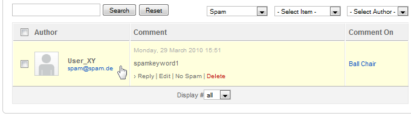

The last setting Time between user posts lets you set the time in seconds, how long a user have to wait until he can post a new comment. This setting prevents flood spamming.
Learn how to set up the comment system of the ZOO extension. You can change approval settings, manage the comments in the Joomla administration and restrict comments which contain spam.
Before the visitors of your site can leave comments on ZOO items, you have to configure and enable the built-in native comment system of the ZOO extension. To do so, click on the app instance in the tab bar of the ZOO extension, then click on Config in the second tab bar.

On the right hand click on Comments and the configuration tab will slide out. We will go through the settings step-by-step.
In the first section you have to activate the comment system by switching the Enable comments option to Yes.
With the option Name and e-mail required you can choose, whether the visitors have to enter these details to be able to leave a comment.
The next option lets you choose, whether only registered users are able to leave a comment. Not registered users will read a prompt to register first, before they can leave a comment
With the option Approved by default you can choose between three settings. Not approved by default means, that you have to login as administrator and approve all new comments manually in the ZOO extension. With Approved by default all comments are automatically approved. The last option Approve required only once means, that when you approve a comment of a certain user, all further comments of the same user will be approved automatically.
The last setting Time between user posts lets you set the time in seconds, how long a user have to wait until he can post a new comment. This setting prevents flood spamming.

The following setting lets you configure the email notifications. If you enter an email adress, you'll get notified each time a new comment is posted. If you enable the Email on reply setting, users will be notified of a reply to their comments.
The next setting is about the avatar. You can choose whether the avatar is shown or not. If you set it to yes, a small avatar is shown next to each comment. If your visitors have a Gravatar account at www.gravatar.com their gravatar image is set as the avatar for their comments automatically. You also have to enable showing the Facebook avatar.
Additionally in this block you can set the order of comments (Latest last/Latest first) and the depth of nested comments. Nested means, that the comments will be shown indented, when someone replies to a comment.

In the next setting you can enable the Facebook connect to let your visitors login with their Facebook accounts. Their Facebook profile image will be displayed as avatar for their comments. We made {doc: set-up-facebook-connect text: this extra tutorial}, to show you how to setup the Facebook connect.
The next setting is for enabling the Twitter connect to let your visitors login with their Twitter accounts. Their Twitter profile image will be displayed as avatar for their comments. We made {doc: set-up-twitter-connect text: this extra tutorial}, to show you how to setup the Twitter connect.

The last two settings of this section let you filter spam out of the comments by using the external services of Akismet.com and Mollom.com. These services check if the comment seems to be spam or not. If a comment is identified as spam and the system moves it to the spam folder. We decided against a CAPTCHA mechanism because the above mentioned spam preventing services are much more user friendly. The user won't notice anything and doesn't have to fill out extra fields. You have to register at those sites to get access to their services.

In addition to prevent spam we added a blacklist feature. This means that when a comment contains any word from the blacklist in its content, name, URL, e-mail, or IP, it will be marked as spam.
Click on the app instance in the tab bar of the ZOO extension, then click on Comments in the second tab bar. You see all comments used in your app instance including the comment author, the text of the comment and the commented item. Everything in one view! On top of the list you have a search field and in the top right corner dropdown fields to filter your comments.

You can easily see, which of the comments are not approved yet. A small Not approved! message appears on top of the comment. Alternatively you can use the filter selectbox and set it to Pending to view all pending comments, waiting to be approved.
When you hover a comment, you have several task will be displayed. For example you can reply directly to the comment without going to the website and of course you can approve, delete or mark the comment as spam.

If a post is marked as spam, either automatically by processing your blacklist in the background, using the external services Akismet and Mollom or manually by the admin, it will no longer show in the list overview of comments. To view the spam comments you have to use the filter for the status and set it to Spam. The following list shows the comments marked as spam. When you hover the spam comments you have again options like deleting them or deleting only the spam status.
